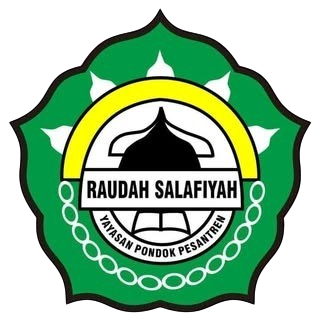
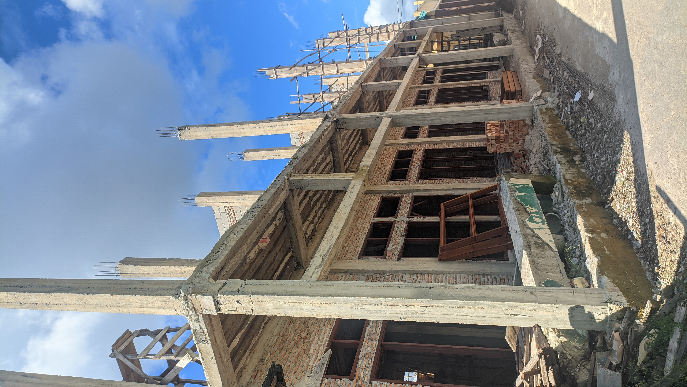
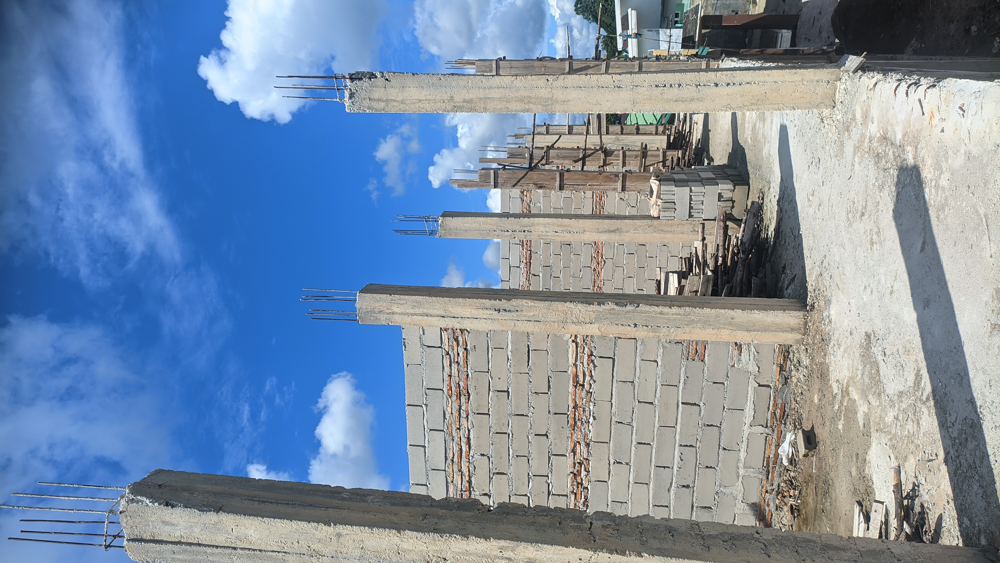
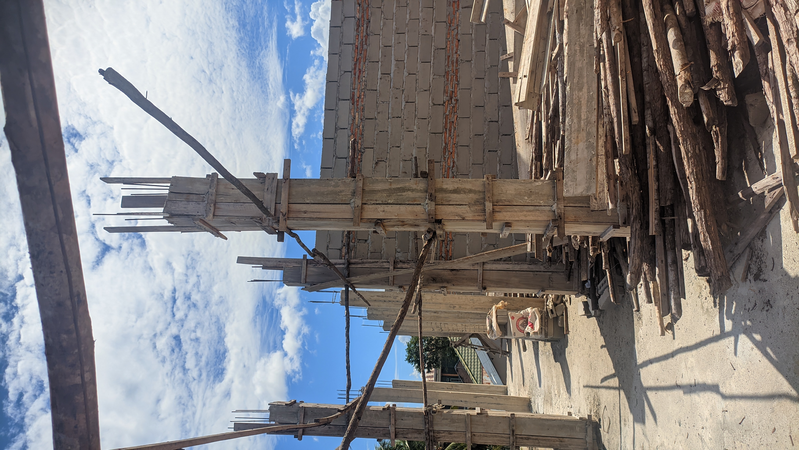

<!DOCTYPE html>
<html lang="id">
<head>
  <meta charset="UTF-8" />
  <meta name="viewport" content="width=device-width, initial-scale=1.0"/>
  <title>Donasi Pondok Pesantren Raudah Salafiyah</title>
  <link href="https://fonts.googleapis.com/css2?family=Amiri&display=swap" rel="stylesheet">
  <style>
    body {
      font-family: 'Georgia', serif;
      background-color: #e9f5ec;
      margin: 0;
      padding: 0;
      color: #3e342b;
      scroll-behavior: smooth;
    }

    .fade-up {
      opacity: 0;
      transform: translateY(30px);
      animation: fadeUp 1s ease-out forwards;
    }

    @keyframes fadeUp {
      to {
        opacity: 1;
        transform: translateY(0);
      }
    }

    .delay-1 { animation-delay: 0.3s; }
    .delay-2 { animation-delay: 0.6s; }
    .delay-3 { animation-delay: 0.9s; }
    .delay-4 { animation-delay: 1.2s; }

    header {
      background-color: #d4c4a8;
      padding: 20px;
      text-align: center;
      color: #2f2b26;
    }

    .ornamen-header {
      background-image: url('ornamen-atas.png');
      background-repeat: no-repeat;
      background-position: top center;
      background-size: contain;
      height: 60px;
      margin-bottom: 10px;
    }

    .container {
      padding: 20px;
      max-width: 700px;
      margin: auto;
      background-color: #fffaf0cc;
      box-shadow: 0 0 10px rgba(0,0,0,0.05);
      margin-top: 20px;
      border-radius: 10px;
    }

    h1, h2 {
      color: #5c4b3b;
    }

    p {
      line-height: 1.8;
    }

    .donasi-info {
      background-color: #f2e8d5;
      padding: 15px;
      border-left: 5px solid #8d7b5f;
      margin-top: 20px;
      border-radius: 5px;
    }

    .qris-img {
      display: block;
      margin: 15px auto;
      max-width: 250px;
      border-radius: 10px;
    }

    .arabic-text {
      font-family: 'Amiri', serif;
      font-size: 1.7em;
      text-align: center;
      margin-bottom: 5px;
    }

    .divider-islami {
      border: 0;
      height: 30px;
      background: url('divider-motif.png') no-repeat center;
      background-size: contain;
      margin: 30px 0;
    }

    blockquote.quote {
      font-style: italic;
      background-color: #fef4e8;
      border-left: 4px solid #d3a762;
      padding: 10px 20px;
      margin: 20px 0;
      border-radius: 5px;
    }

    footer {
      text-align: center;
      font-size: 14px;
      padding: 20px;
      background-color: #f3ede2;
      margin-top: 30px;
      color: #6b5e4e;
    }

    a {
      color: #5c3d2e;
      text-decoration: none;
    }

    a:hover {
      text-decoration: underline;
    }

    .foto-pembangunan {
      display: flex;
      flex-direction: column;
      gap: 12px;
      align-items: center;
      margin-bottom: 20px;
    }

    .foto-pembangunan img {
      width: 90%;
      max-width: 400px;
      aspect-ratio: 16 / 9;
      object-fit: cover;
      border-radius: 6px;
      box-shadow: 0 2px 5px rgba(0,0,0,0.1);
      cursor: pointer;
      transition: transform 0.3s ease;
    }

    .foto-pembangunan img:hover {
      transform: scale(1.02);
    }

    .wa-float {
      position: fixed;
      bottom: 20px;
      right: 20px;
      background-color: #25d366;
      color: white;
      padding: 12px 18px;
      border-radius: 50px;
      font-weight: bold;
      text-decoration: none;
      font-size: 15px;
      box-shadow: 0 4px 10px rgba(0,0,0,0.2);
      z-index: 999;
      transition: background 0.3s ease;
    }

    .wa-float:hover {
      background-color: #1ebd5a;
    }

    .modal-img {
      display: none;
      position: fixed;
      z-index: 9999;
      padding-top: 60px;
      left: 0;
      top: 0;
      width: 100%;
      height: 100%;
      overflow: auto;
      background-color: rgba(0,0,0,0.8);
    }

    .modal-content-img {
      margin: auto;
      display: block;
      max-width: 90%;
      max-height: 80%;
      border-radius: 10px;
      animation: zoom 0.3s ease;
    }

    @keyframes zoom {
      from { transform: scale(0.8); opacity: 0; }
      to { transform: scale(1); opacity: 1; }
    }

    .close-img {
      position: absolute;
      top: 30px;
      right: 45px;
      color: #fff;
      font-size: 40px;
      font-weight: bold;
      cursor: pointer;
    }

    form input, form textarea {
      width: 100%;
      padding: 10px;
      margin-bottom: 10px;
      border-radius: 6px;
      border: 1px solid #ccc;
      font-size: 14px;
    }

    form button {
      padding: 10px 20px;
      background: #25d366;
      color: white;
      border: none;
      border-radius: 6px;
      font-weight: bold;
      cursor: pointer;
    }
  </style>
</head>
<body>

  <header class="fade-up delay-1">
    <div class="ornamen-header"></div>
    <h1>Open Donasi Pembangunan</h1>
    <p>“            ”<br>
    <small>Barang siapa membantu membangun tempat menuntut ilmu karena Allah, maka Allah akan membangunkan rumah untuknya di surga. (HR. Bukhari & Muslim)</small></p>
  </header>

  <div class="fade-up delay-2" style="text-align: center; margin-top: 30px;">
    
  </div>

  <div class="container fade-up delay-3">
    <p class="arabic-text">"   "</p>
    <blockquote class="quote">Rehap Bangunan Santri Pondok Pesantren Raudah Salafiyah</blockquote>

    <h2>Assalamualaikum Warahmatullahi Wabarakatuh</h2>
    <p>Kami mengajak Bapak/Ibu dan para dermawan untuk ikut serta dalam program <strong>open donasi pembangunan fasilitas Pondok Pesantren</strong>.</p>

    <p>Saat ini masih dalam proses pembangunan, mencakup seluruh fasilitas pondok seperti:</p>
    <ul>
      <li>Pembangunan kelas</li>
      <li>Pembangunan kantor</li>
      <li>Pengadaan Unit Kebersihan</li>
    </ul>

    <div class="donasi-info">
      <h3>Salurkan Donasi Terbaik Anda ke:</h3>
      <p><strong>Mandiri:</strong> 1590007769457<p>  (Ustadz Jailani) 
      <p> <strong> DANA: </strong> 0895-2555-2751 <p> (Umar Hamid)

      <p><strong>Dokumentasi Pembangunan:</strong></p>
      <div class="foto-pembangunan">
        
        
        
      </div>

      <p><strong>QRIS (semua E-wallet):</strong></p>
      
    </div>

    <p style="text-align:center;"><a href="qris.png" download>Unduh QR Code</a></p>

    <hr class="divider-islami" />

    <h2>Form Konfirmasi Donasi</h2>
    <form onsubmit="kirimWA(event)">
      <input type="text" id="nama" placeholder="Nama Donatur" required>
      <input type="number" id="nominal" placeholder="Nominal (Rp)" required>
      <textarea id="catatan" placeholder="Catatan (opsional)"></textarea>
      <button type="submit">Kirim Konfirmasi ke WhatsApp</button>
    </form>

    <hr class="divider-islami" />

    <p>Semoga setiap rupiah yang Bapak/Ibu berikan menjadi amal jariyah yang pahalanya terus mengalir hingga akhirat kelak. Aamiin.</p>
    <p><strong>Informasi & Konfirmasi (Ustadz Jailani):</strong> <a href="https://wa.me/6282154259994" target="_blank">Klik untuk WhatsApp</a></p>
    <p>Jazakumullahu Khairan Katsiran.</p>
  </div>

  <footer class="fade-up delay-4">
    &copy; 2025 Pondok Pesantren Raudah Salafiyah | Amal Jariyah Anda, Cahaya Abadi untuk Akhirat
  </footer>

  <a href="https://wa.me/6289525552751" target="_blank" class="wa-float"> Chat Santri</a>

  <!-- Modal -->
  <div id="imgModal" class="modal-img">
    <span class="close-img" onclick="closeModal()">&times;</span>
    
  </div>

  <script>
    function openModal(src) {
      document.getElementById("imgModal").style.display = "block";
      document.getElementById("modalImage").src = src;
    }

    function closeModal() {
      document.getElementById("imgModal").style.display = "none";
    }

    window.onclick = function(e) {
      const modal = document.getElementById("imgModal");
      if (e.target === modal) {
        modal.style.display = "none";
      }
    }

    function kirimWA(e) {
      e.preventDefault();
      const nama = document.getElementById("nama").value;
      const nominal = document.getElementById("nominal").value;
      const catatan = document.getElementById("catatan").value;

      const nomor = "6282154259994"; // ganti sesuai kebutuhan
      const pesan = `Assalamualaikum, saya ingin mengonfirmasi donasi:\n\nNama: ${nama}\nNominal: Rp${nominal}\nCatatan: ${catatan || '-'}`;

      const url = `https://wa.me/${nomor}?text=${encodeURIComponent(pesan)}`;
      window.location.href = url;
    }
  </script>

</body>
</html>